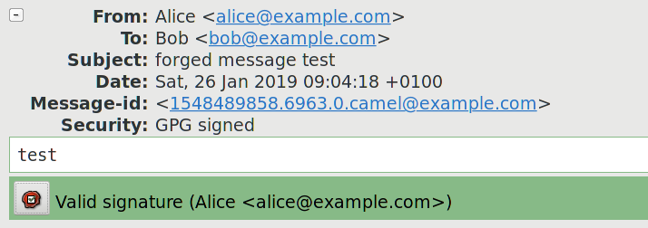

Contents
This article describes the UI deficiency of Evolution mail client that extrapolates the trust of one of OpenPGP key UIDs into the key itself, and reports it along with the (potentially untrusted) primary UID. This creates the possibility of tricking the user into trusting a phished mail via adding a forged UID to a key that has a previously trusted UID.
The commonly used OpenPGP trust models are UID-oriented. That is, they are based on establishing validity of individual UIDs associated with a particular key rather than the key as a whole. For example, in the Web-of-Trust model individuals certify the validity of UIDs they explicitly verified.
Any new UID added to the key is appropriately initially untrusted. This is understandable since the key holder is capable of adding arbitrary UIDs to the key, and there is no guarantee that new UID will not actually be an attempt at forging somebody else's identity.
OpenPGP signatures do not provide any connection between the signature and the UID of the sender. While technically the signature packet permits specifying UID, it is used only to facilitate finding the key, and is not guaranteed to be meaningful. Instead, only the signing key can be derived from the signature in cryptographically proven way.
GnuPG (as of version 2.2.12) does not provide any method of associating the apparent UID (e.g. from e-mail's From header) against the signature. Instead, only the signature itself is passed to GnuPG and its apparent trust is extrapolated from validity of different UIDs on the key. In other words, the signature is considered to be made with a trusted key if at least one of the UIDs has been verified.
An example user-oriented output from such a verification lists UIDs on the key along with their respective validity:
gpg: Signature made sob, 26 sty 2019, 09:01:16 CET gpg: using RSA key EDA1165366204A694417B2FC551A87083FDCFBF0 gpg: Good signature from "Alice <alice@example.com>" [unknown] gpg: aka "Eve <eve@example.com>" [full]
However, the machine-oriented output provided to --status-fd is not this verbose:
[GNUPG:] NEWSIG [GNUPG:] KEY_CONSIDERED EDA1165366204A694417B2FC551A87083FDCFBF0 0 [GNUPG:] SIG_ID dbb5pG09OgJI0cRPGjqs2ZFAqyw 2019-01-26 1548489676 [GNUPG:] KEY_CONSIDERED EDA1165366204A694417B2FC551A87083FDCFBF0 0 [GNUPG:] GOODSIG 551A87083FDCFBF0 Alice <alice@example.com> [GNUPG:] VALIDSIG EDA1165366204A694417B2FC551A87083FDCFBF0 2019-01-26 1548489676 0 4 0 1 8 01 EDA1165366204A694417B2FC551A87083FDCFBF0 [GNUPG:] KEY_CONSIDERED EDA1165366204A694417B2FC551A87083FDCFBF0 0 [GNUPG:] TRUST_FULLY 0 pgp [GNUPG:] VERIFICATION_COMPLIANCE_MODE 23
Specifically, note that this output includes:
the key's primary UID (without its validity) in GOODSIG,
the key's full fingerprint in VALIDSIG,
the key's extrapolated trust in TRUST_*. 1
As such, this output is not only unsuitable to verify whether the UID used to send the message is trusted but also is not proof to mistakenly associating the extrapolated trust with the primary UID provided in output.
The Evolution mail client (as of version 3.26.6) converts the machine-oriented GnuPG output into a user-friendly status bar. This bar indicates the signature check result using an explanatory message and background color (red for failed verification, yellow for untrusted signatures, green for trusted signatures). It also includes the primary UID of the key used to make the signature, and a button bringing complete GnuPG output.
The signature bars for an example trusted and untrusted signatures are presented below:
This status bar is created directly from the --status-fd output presented above. It combines the indicated key trust with the primary UID of the key used to make the signature, independently of the UID's validity itself.
The attack is based on using the deficiency of Evolution UI when handling new identifiers on previously trusted keys to convince the user to trust a phishing attempt. Please consider the following example:
Alice, Bob and Eve are all using OpenPGP, and they all have a single UID on their key corresponding to their legitimate identity. Through Bob's Web-of-Trust, both Alice's and Eve's primary identifiers are trusted.
Now, Eve creates a new identifier that resembles the one belonging to Alice, and sets it as her primary identifier. Afterwards, she sends an e-mail to Bob, with Alice's e-mail address in the From field, signed with her own key. Evolution displays the mail as presented in the following screenshot:
Specifically, please note that the message Valid signature (Alice <alice@example.com>) suggests that they mail has been signed with a trusted key belonging to Alice. However, the detailed output reveals that the only trusted UID in the key belongs to Eve:
gpg: Good signature from "Alice <alice@example.com>" [unknown] gpg: aka "Eve <eve@example.com>" [full]
This method can be used to easily trick the recipient into accepting phished mail as legitimate. However, it has a limited scope because:
It requires the attacker's key to gain recipient's trust, e.g. via OpenPGP WoT model. As a result, it may require the attacker to disclose his identity or trick additional people into accepting a forged identity.
The mismatched identity is immediately apparent on key inspection, and therefore raises suspicion as to the key holder's legitimacy.
The issue has been reported upstream at 2019-01-26. However, upstream closed the bug report, claiming that the issue needs to be resolved on GnuPG end. 2
However, the existing GnuPG API should be sufficient to resolve the problem. In particular, Evolution could use --list-keys --with-colons to easily determine validity of each UID corresponding to the key:
tru::1:1548488994:1611560841:3:1:5 pub:f:2048:1:551A87083FDCFBF0:1548488894:1611560894::-:::scESC::::::23::0: fpr:::::::::EDA1165366204A694417B2FC551A87083FDCFBF0: uid:-::::1548488982::AD66BA4CCE5C5EE636FAD1BE2B9A0DB88903021E::Alice <alice@example.com>::::::::::0: uid:f::::1548488894::A608485EB3B3D764C07C4ECDE75D90422B705C6A::Eve <eve@example.com>::::::::::0: sub:f:2048:1:C21F342D44257AE6:1548488894::::::e::::::23: fpr:::::::::E4113A42D86B9D335B5D4167C21F342D44257AE6:
In the following section, profiles will be used to reference isolated directories used to store GnuPG keys and configuration. The GNUPGHOME environment variable is used to specify the directory to use.
The issue can be easily reproduced through the following steps:
Create new directories that will serve as GNUPGHOME for Alice, Bob and Eve.
Create keys for Alice, Bob and Eve using their profiles. Add legitimate user identifier to each of them.
Export Alice's and Eve's keys from their profiles, and import them into Bob's.
Sign Alice's and Eve's keys using Bob's key.
Export signed Eve's key and import it into her profile.
Using Eve's profile, add a new user identifier to her key. Make the UID resemble Alice's UID.
Export updated Eve's key and import it to Bob's profile.
Using Eve's profile, create a new signed mail in mbox format. This can be done e.g. via creating a text file, using gpg --clearsign to sign it, then prepending e-mail headers such as:
From localhost From: Alice <alice@example.com> To: Bob <bob@example.com> Subject: forged message test
Import the resulting mail into Evolution, and open it.
GnuPG Details (https://git.gnupg.org/cgi-bin/gitweb.cgi?p=gnupg.git;a=blob;f=doc/DETAILS;h=74a63ef007fdf1903918351ac281847098ab3828)
Potential vulnerability: gpg key trust extrapolation to new UIDs · Issues · GNOME / evolution · GitLab (https://gitlab.gnome.org/GNOME/evolution/issues/299)
The comments to this article are maintained as part of the relevant blog entry: Evolution: UID trust extrapolation attack on OpenPGP signatures.